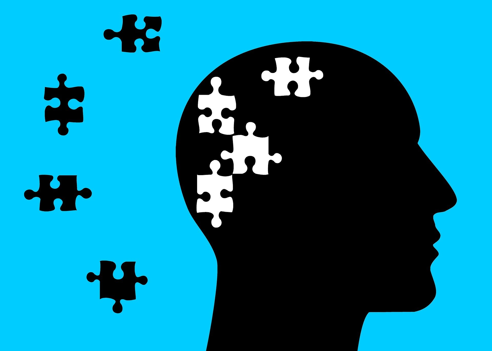

any condition characterized by cognitive and emotional disturbances, abnormal behaviors, impaired functioning, or any combination of these. Such disorders cannot be accounted for solely by environmental circumstances and may involve physiological, genetic, chemical, social, and other factors. Specific classifications of mental disorders are elaborated in the American Psychiatric Association’s Diagnostic and Statistical Manual of Mental Disorders (see DSM–IV–TR; DSM–5) and the World Health Organization’s International Classification of Diseases. Also called mental illness; psychiatric disorder; psychiatric illness; psychological disorder. See also psychopathology.
